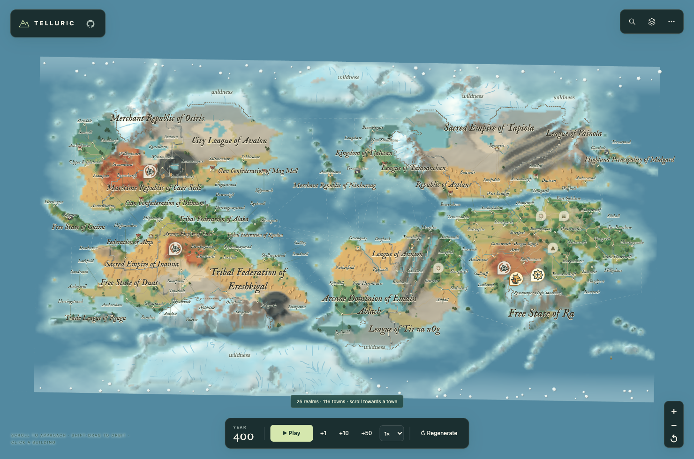
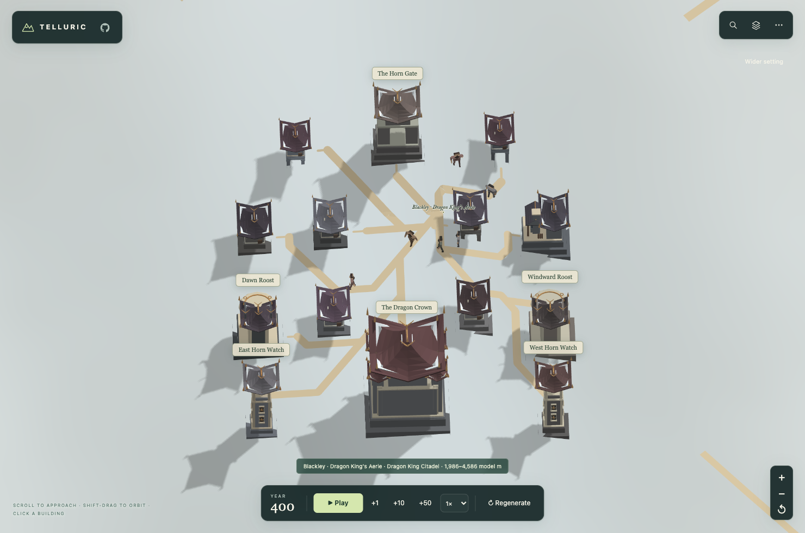
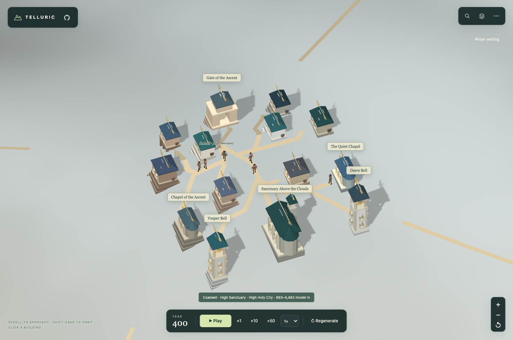
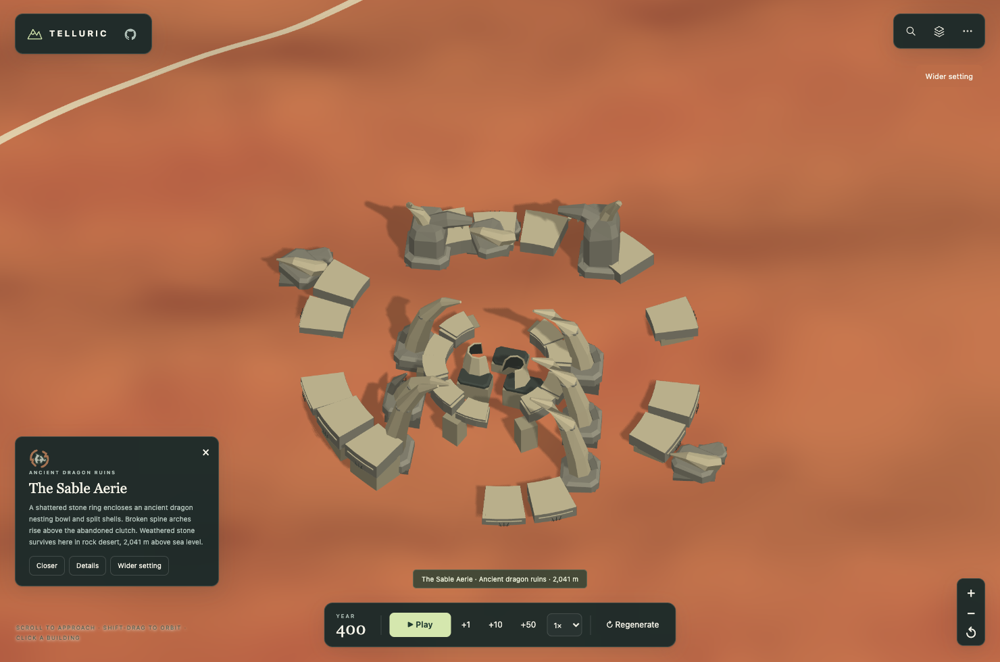
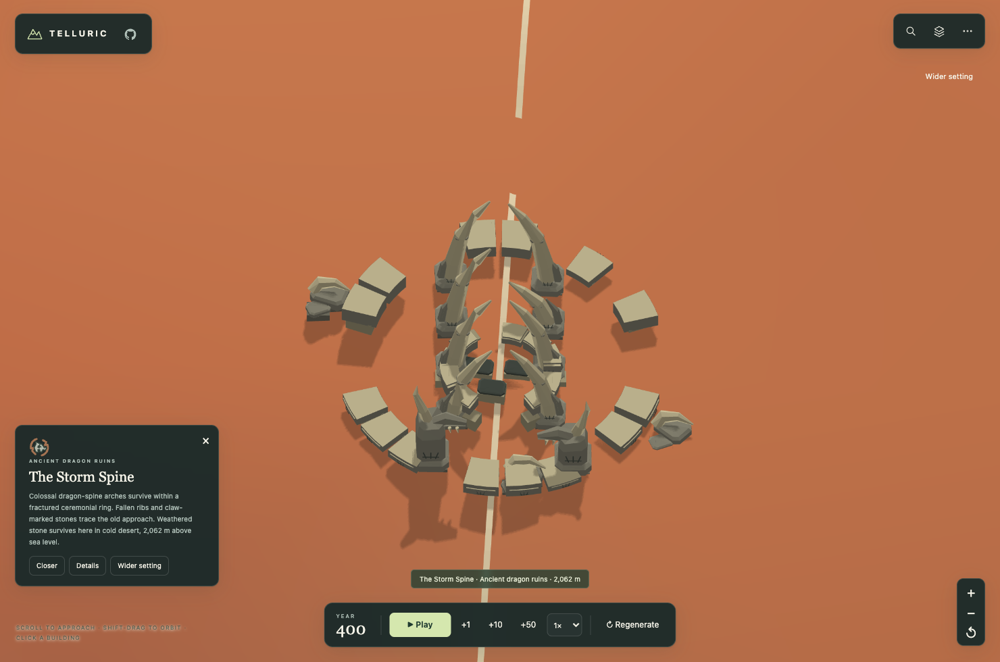
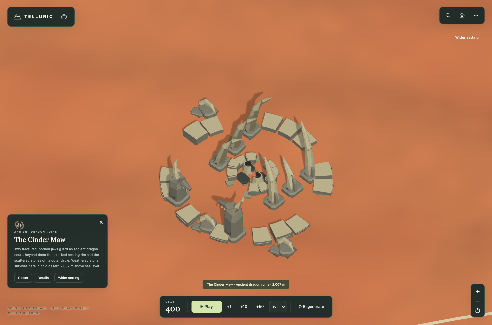

High cities & dragon relics
Distinct crests identify mountain courts and ancient dragon remains. The atlas prints every country's full formal name, from continental views to narrow screens.

Aereth-47 · Year 400116 towns, 25 countries. A winged dragon crest, a radiant holy seal and broken dragon rings mark the special sites.

Cairnwatch · Dragon King's AerieA tiny court at 4,010 m, with 719 residents and 14 buildings.

Rosethorpe · High SanctuaryA mountain sanctuary at 3,886 m, with 759 residents and 14 buildings.

The Sable AerieShattered nesting courts and split shells survive among the stone rings.

The Storm SpineA procession of worn dragon-spine arches and fallen masonry.

The Cinder MawA horned gateway rises above fractured dragon stonework.